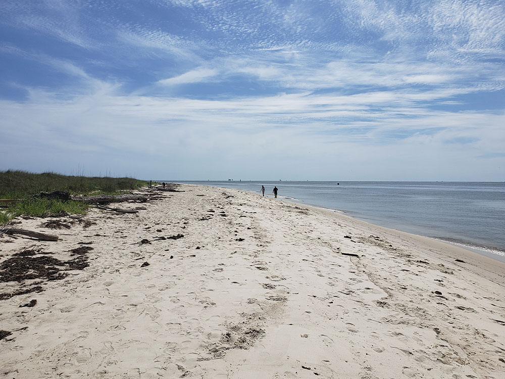
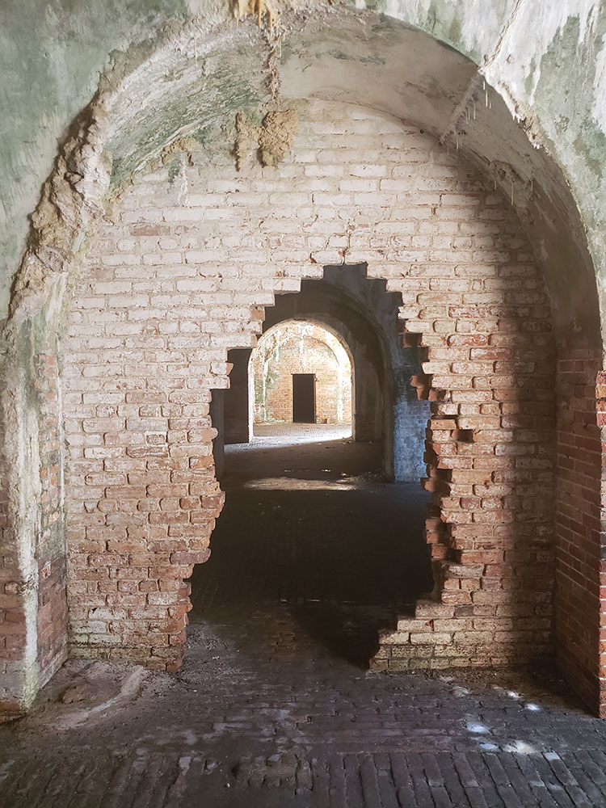
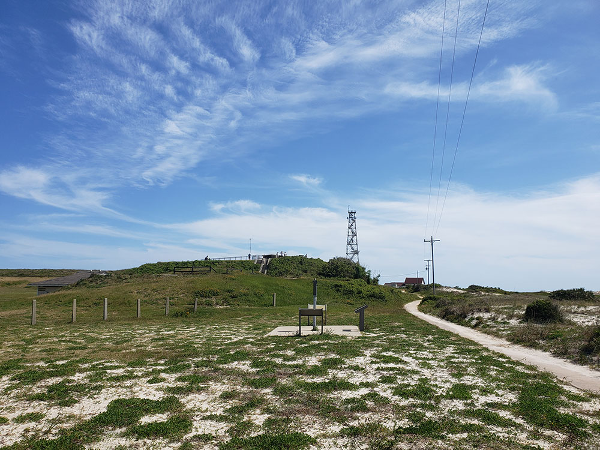
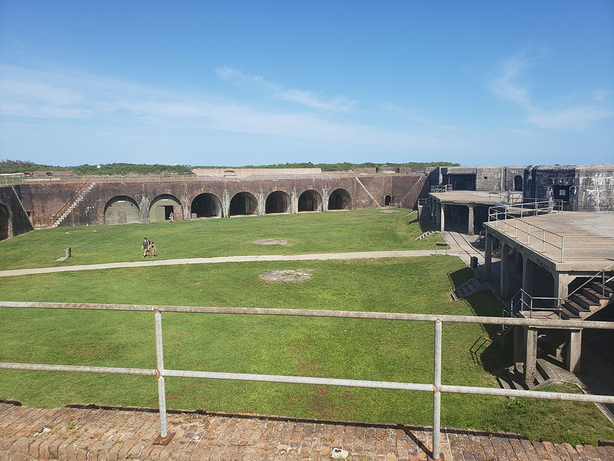
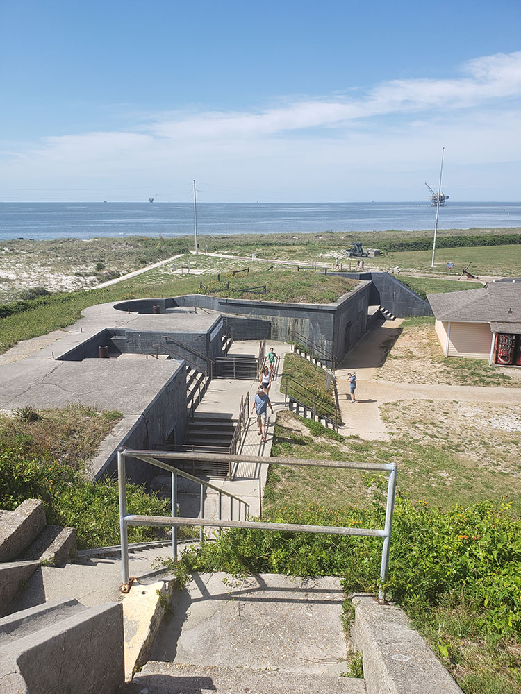
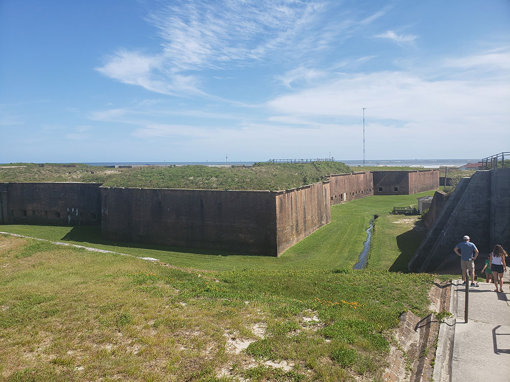

Historic masonry pentagonal bastion fort at the mouth of Mobile Bay, Alabama
General Information
Park grounds open daily year-round
Many park areas, trails, and beaches are free to access.
Additional fees may apply for camping, fishing, lodging, and special amenities.
How to Get There
From Gulf Shores (3 mi): Travel east on AL-182 or Gulf State Park Road from the hotel district in Gulf Shores and follow signs to Gulf State Park at 20115 State Park Road, located between Gulf Shores and Orange Beach.
Overview
Fort Morgan State Historic Site preserves a large masonry pentagonal bastion fort at the mouth of Mobile Bay, named for Revolutionary War hero Daniel Morgan. It was built on the site of the earlier Fort Bowyer, an earthen and stockade fortification involved in the final land battles of the War of 1812, and was completed in 1834 as part of the nation's coastal defense system. The fort is best known for its role in the Battle of Mobile Bay in August 1864, when Union Admiral David Farragut's fleet ran past its guns, and it remained in military use through the Spanish-American War and both World Wars. Today it is a state historic site maintained by the Alabama Historical Commission, and visitors come to walk the brick passageways, ramparts and gun batteries and to enjoy the Gulf views.
Access
Fort Morgan sits at the tip of Mobile Point at the western end of the Fort Morgan Peninsula, at the end of State Route 180 (Alabama). Most visitors drive from nearby Gulf Shores, roughly 20 miles to the east, or from Mobile, which is a little over an hour away. Across the bay, Dauphin Island, home to Fort Gaines, is linked to the fort by a passenger and vehicle ferry across the mouth of Mobile Bay, so check the ferry schedule before planning a crossing. There is no public transit to the site, so a car is the practical way to get here.
Seasons
Summers on the Alabama Gulf Coast are hot and humid, and the fort's exposed brick and open grounds offer little shade at midday. Spring and fall are the most comfortable seasons for exploring, and both bring migrating birds to the peninsula, which is a well-known stop for birdwatchers. Winters are mild and quiet, with cool breezes off the water. Hurricane season runs from June through November, and storms can close the site or the ferry, so check conditions before you travel.
Things to Do
Explore Historic Fort Morgan
Fort Morgan State Historic Site preserves one of the most important coastal fortifications in the United States. Built between 1819 and 1834, the massive masonry fort played key roles in the Civil War, the Spanish-American War, and both World Wars. Visitors can explore the fort's walls, bastions, parade grounds, and defensive structures while learning about its military history.
Learn About the Battle of Mobile Bay
Fort Morgan is best known for its role in the Civil War Battle of Mobile Bay, fought on August 5, 1864. Visitors can learn about Admiral David Farragut's famous "Damn the torpedoes, full speed ahead!" command and the naval engagement that helped secure Union control of Mobile Bay.
Enjoy Gulf Coast Views and Wildlife Watching
Located at the entrance to Mobile Bay, the site offers beautiful views of the Gulf of Mexico, Mobile Bay, and surrounding coastal habitats. Visitors can enjoy photography, birdwatching, and seasonal migration events that make Fort Morgan a popular destination for nature enthusiasts.
Top Trails
Fort Grounds Walking Tour
Length: Approximately 1.0 mile round trip
Elevation Gain: Minimal
Difficulty: Easy
This self-guided walking route explores the fort's interior, defensive structures, batteries, and parade grounds while providing interpretive information about military history, engineering, and daily life at the fort.
Coastal Nature Walk
Length: Approximately 0.5 miles round trip
Elevation Gain: Minimal
Difficulty: Easy
Visitors can stroll along the shoreline and surrounding natural areas to observe coastal wildlife, migratory birds, native vegetation, and scenic views of Mobile Bay and the Gulf Coast.
Visitor Centers
The fort has a museum and visitor facilities near its entrance, with exhibits and artifacts on the fort's construction, its garrison life and the Battle of Mobile Bay, along with a gift shop. Interpretive signs and a self-guided route lead through the fort itself. Staff at the entrance can answer questions and explain what is open, and it is worth checking current hours and any areas closed for preservation work.
Camping and Lodging
There is no camping or lodging inside the historic site. The nearest hotels, condos and vacation rentals are along the Fort Morgan Peninsula and in Gulf Shores and Orange Beach, about 20 to 30 minutes east. Gulf State Park has a large campground, cabins and The Lodge at Gulf State Park, and the island town of Dauphin Island, across the bay, has its own rentals and a public campground. Mobile and Foley, each about an hour or so away, have a wider choice of chain hotels, and Pensacola, Florida is also within about an hour and a half.
Sources: Alabama Historical Commission official Fort Morgan State Historic Site information, including fort history, Battle of Mobile Bay interpretation, military exhibits, visitor amenities, and educational resources. https://ahc.alabama.gov/properties/ftmorgan/ftmorgan.aspx Additional historical and visitor information verified through Fort Morgan State Historic Site resources and Mobile Bay heritage information. https://fort-morgan.org/
This article uses material from the Wikipedia articles "Fort Morgan (Alabama)", which are released under the Creative Commons Attribution-Share-Alike License 3.0





